1위의 기준, 그리고 문서·기억·스킬 찾기
이 영상은 AI(Artificial Intelligence) 코딩 도구를 14개 분야로 나누고, 분야마다 1위가 실제로 어떻게 돌아가는지와 2위·대안이 뭐가 다른지를 차례로 짚어요. 먼저 '1위'의 뜻부터 정하고 시작해요.
왼쪽 카드의 'GitHub 별 수 1등'과, '또는' 뒤에 오는 채널별 설치 수 1등이 기준이에요. 그 아래에는 '성능 순위'에 줄을 긋고 '아님'이라고 적어 놨어요. 숫자는 10월 18일에 잰 값이에요.
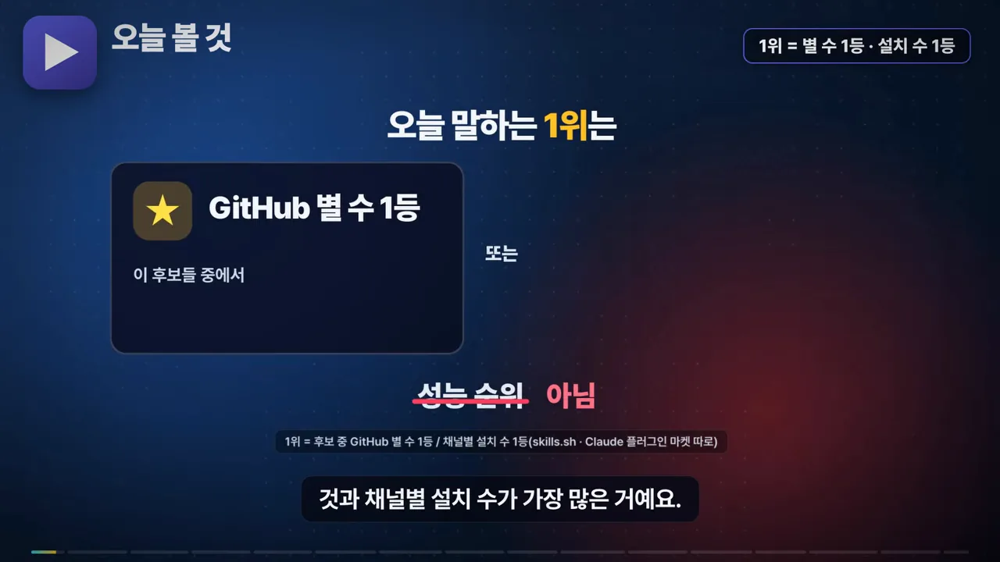
1. 라이브러리 문서: Context7과 Serena
AI에게 막 업데이트된 라이브러리로 코드를 짜 달라고 하면, 학습할 때 본 옛 문법을 쓰거나 없는 함수를 지어내곤 해요. Context7은 질문 끝에 use context7을 붙이면 그 라이브러리 지금 버전의 공식 문서에서 필요한 부분만 찾아 답 옆에 붙여 줘요. 무료는 한 달 1,000번까지예요.
아래 화면에서 질문 칸 끝의 초록색 use context7을 보세요. 그 아래 코드의 app.mount(root)와 await app.load() 옆에 '지금 버전 ✓', '문서에 있음 ✓' 표시가 붙었어요. 붙이기 전에는 같은 자리에 옛 문법과 없는 함수가 있었어요.
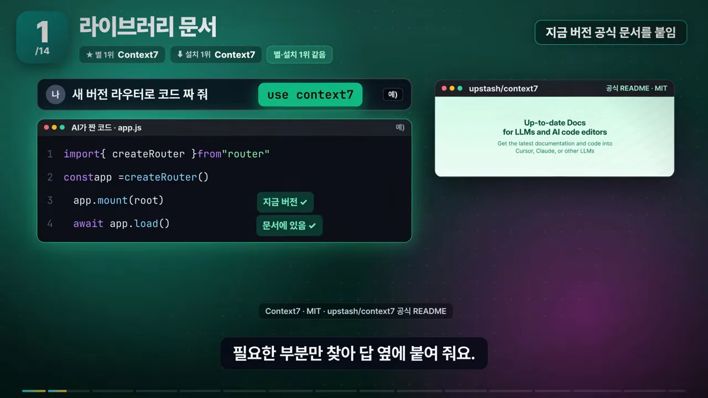
별 2위 Serena는 Context7과 이름이 같이 오르내리지만 하는 일이 달라요. 왼쪽 Context7 칸은 클라우드에서 router v5, react 20, prisma 8 같은 라이브러리 문서를 가져와요. 오른쪽 Serena 칸은 내 컴퓨터의 my-app/src/auth.ts, api.ts 같은 내 코드를 함수·클래스 단위로 찾아 고치게 해 줘요.

2. 기억: claude-mem과 Claude Code 기본 기억
Claude Code는 새 세션을 열면 지난 대화를 이어 오지 않아요. 대신 기본으로 세 가지가 있어요. 카드 세 장이 그것인데, 사람이 규칙을 적는 CLAUDE.md, Claude가 스스로 적는 짧은 '자동 메모', 지난 세션 하나를 통째로 다시 여는 '지난 세션 다시 열기'예요.
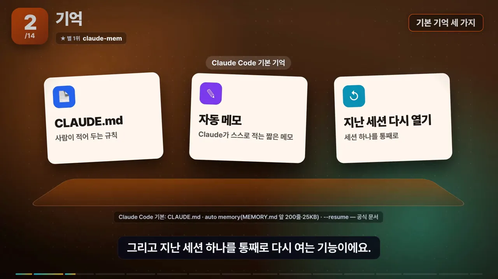
claude-mem은 여기에 더해, 작업하면서 읽고 고친 내용을 자동으로 기록하고 요약해 둬요. 오른쪽 창처럼 새 세션을 열면 '어제 · 고친 버그 / 로그인하자마자 튕기던 문제'가 타임라인으로 들어와요. 세션 하나가 아니라 여러 세션을 가로질러 찾아볼 수 있다는 게 기본 기능과의 차이예요.

3. 스킬 찾기: find-skills와 공식 플러그인 목록
스킬이 너무 많아서 뭘 깔지 고르기도 어려워요. Vercel의 find-skills에 '엑셀 정리하는 스킬 있어?'라고 물으면 스킬 장터를 검색해요. 결과 표에는 스킬마다 설치 수와 별 수가 나란히 있고, 설치 1,000 미만이나 별 100 미만은 걸러 낸 뒤 설치 명령까지 골라 줘요.
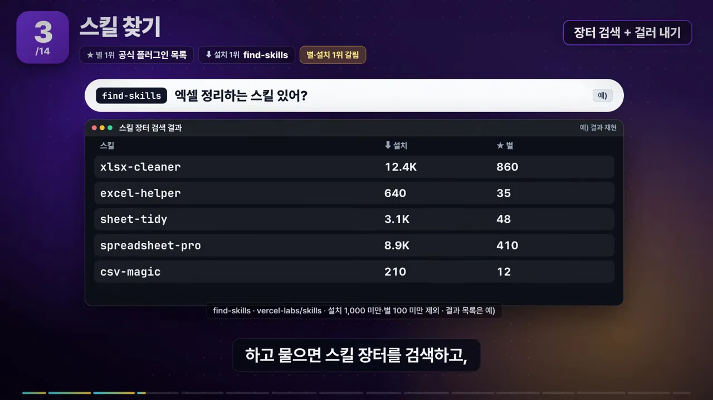
별 1위인 Anthropic 공식 플러그인 목록은 성격이 달라요. Claude Code에서 /plugin을 열면 보이는 목록이 바로 이 저장소예요. 가운데 창에서 example-plugin을 고르면 설치 전에 '명령 /example-run', '훅 PreToolUse', '매 턴 토큰' 막대가 보여요. 무엇이 들어오고 토큰을 얼마나 더 쓰는지 미리 알 수 있어요.

코드 리뷰·동시 실행·토큰 절약
4. 코드 리뷰: PR-Agent, Matt Pocock code-review, 공식 플러그인
세 도구는 리뷰가 어디서 도는지가 달라요. 화면의 세 칸을 왼쪽부터 보면 돼요.
- PR-Agent(왼쪽): GitHub 저장소에 붙여 두면 PR(Pull Request) 댓글에
/review만 써도 30초쯤 뒤 문제될 곳과 빠진 테스트를 리뷰 댓글로 달아요. #128, #129, #130처럼 팀 PR마다 자동으로 돌아요. - Matt Pocock code-review(가운데): 내 에이전트 안에서 돌아요. 하위 에이전트 A는 '팀에서 정한 규칙을 지켰나', B는 '요구한 걸 만들었나'를 따로 봐요.
- Anthropic 공식 code-review 플러그인(오른쪽): 에이전트 다섯 개가 규칙, 버그, git 이력 같은 서로 다른 관점으로 보고, 확신 점수 80점이 넘는 문제만 댓글로 남겨요.
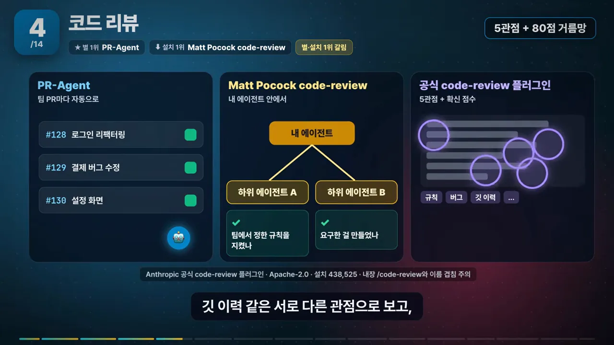
5. 여러 에이전트 동시 실행: Orca, 기본 하위 에이전트, ralph-loop
Orca는 같은 일을 에이전트 여러 개에게 동시에 시키는 데스크톱 앱이에요. 화면 왼쪽의 '같은 일(로그인 화면 만들기)'이 Claude Code, Codex, Cursor, Claude Code 네 줄로 퍼져요. 줄마다 et-cursor/ 같은 작업 폴더가 따로 있어서 파일이 서로 덮이지 않아요. 결과를 나란히 비교해 제일 나은 것(여기서는 Cursor 줄)을 골라요.

Claude Code에도 하위 에이전트와 워크트리가 기본으로 있어서, 따로 설치하지 않고도 일을 나눠 시킬 수 있어요. 위 칸 'Claude Code 기본'에는 Claude 막대만 넷 있고, '일꾼은 전부 Claude'라는 표시가 붙어 있어요. 아래 칸 Orca에는 Cursor, Codex, Claude가 섞여 있어요.
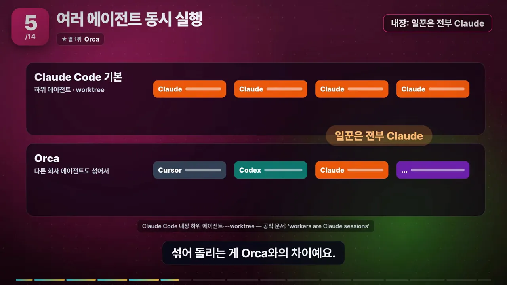
자주 같이 나오는 ralph-loop는 동시 실행이 아니에요. 에이전트 하나가 멈추려 할 때마다 같은 지시를 다시 넣어 끝날 때까지 반복시키는 플러그인이에요. 원 안의 '반복 6번째'가 계속 올라가고, 오른쪽 '반복 한도 기본값 ∞' 아래에 --max-iterations 20이 붙어 있어요.
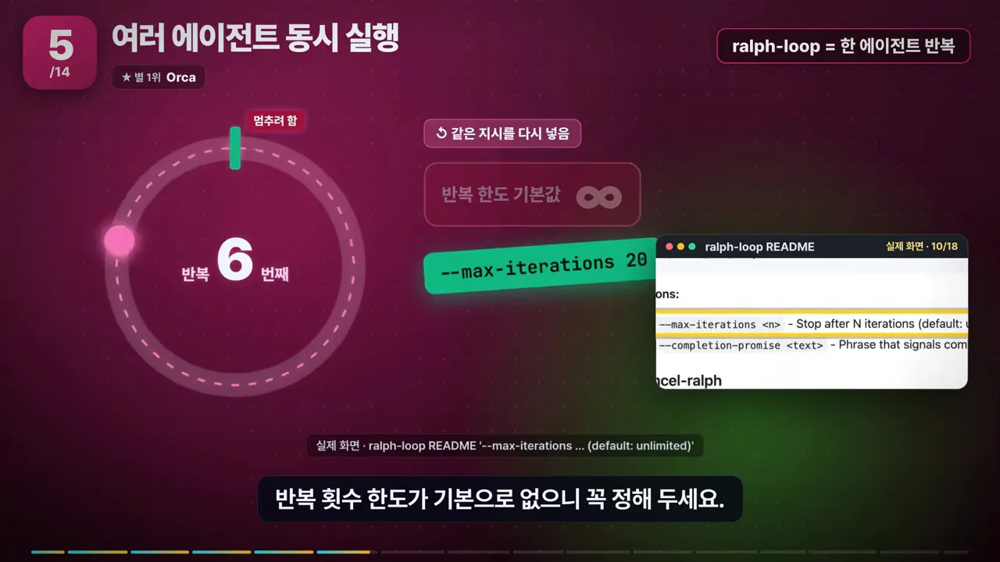
6. 토큰 절약: caveman, rtk, headroom
세 도구는 줄이는 곳이 달라요. 화면은 '나 → 에이전트 → 도구 실행 → API → 모델'로 이어지는 길에 가위 표시로 자르는 지점을 찍었어요.
- caveman(나와 에이전트 사이 가위): AI가 쓰는 답변에서 인사말과 되풀이를 빼고, 코드·숫자·오류 문구는 그대로 둬요. 다만 그냥 '간결하게 답해'라고 시킨 것보다 3%만 더 줄어든다고 제작자가 README에 직접 적어 놨어요.
- rtk(에이전트와 도구 실행 사이 가위): 답이 아니라 명령 결과를 줄여요. 테스트나 git의 긴 출력을 에이전트가 읽기 전에 걸러 줘요.
- headroom(보라색 상자): 내 컴퓨터에 프록시를 두고 API(Application Programming Interface)로 나가는 요청 전체를 압축해요. 원본은 내 컴퓨터에 남겨 두고 필요하면 다시 꺼내 볼 수 있어요.
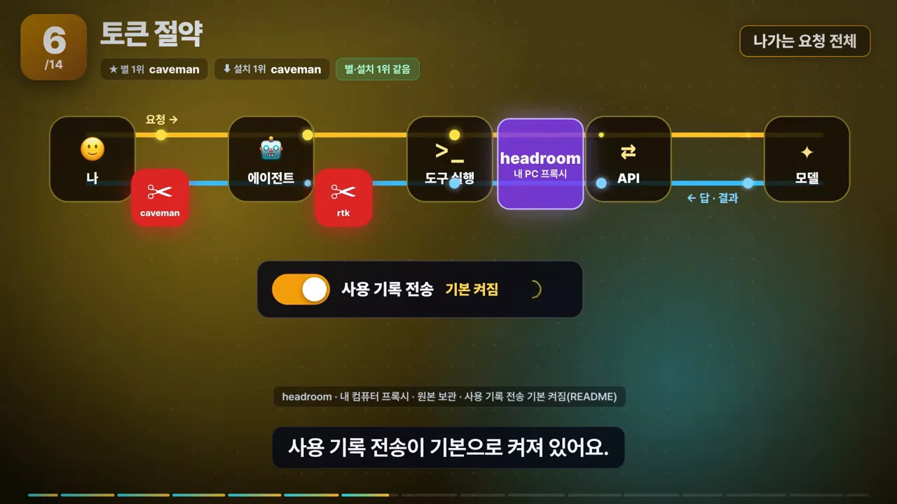
개발 절차·협업·데이터베이스
7. 개발 절차: superpowers와 Matt Pocock skills
superpowers는 에이전트가 곧장 코드부터 짜지 않게 해요. 질문으로 원하는 걸 확인하고, 작게 쪼갠 계획을 세우고, 테스트부터 쓰게 만들어요. 지난주에는 iOS 앱을 웹으로 잘못 만든 사례 때문에 질문 단계를 새로 짰어요. Matt Pocock skills도 순서는 비슷해요. 질문 스킬(grill-me)이 요구 사항을 꼬치꼬치 물어 스펙과 티켓으로 나눈 뒤 테스트를 먼저 써요.
차이는 묶는 방식이에요. 위쪽 superpowers는 '질문 → 계획 → 테스트 → 구현'이 한 줄로 이어져 있어요. 아래쪽 Matt Pocock skills는 질문, 스펙, 티켓, 테스트, 리뷰, 문서, 리팩터 카드가 따로 흩어져 있어서 필요한 것만 골라 써요.

별 그래프에서는 두 선이 거의 붙어 있어요. superpowers가 30만 1천으로 1위인데, Matt Pocock skills가 6천 개 차이로 따라붙었어요.

8. 협업: GitHub MCP 서버와 Atlassian
GitHub 공식 MCP(Model Context Protocol) 서버를 붙이면 '실패한 Actions 원인 찾아서 이슈로 정리해 줘' 같은 일을 에이전트가 GitHub를 직접 읽고 해 줘요. 화면에서는 build와 lint는 통과했고, 빨간 test (ubuntu) 아래에 expected 200, got 500 오류가 펼쳐져 있어요. 에이전트가 이 로그를 읽고 이슈로 옮기는 장면이에요.
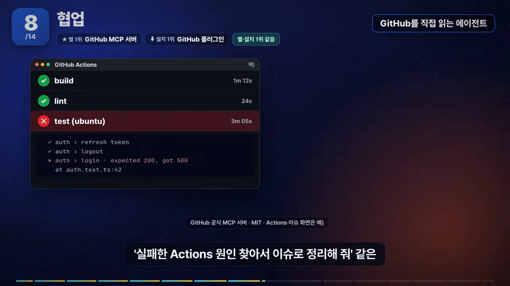
Jira와 Confluence를 쓰는 팀이라면 Atlassian 쪽을 봐야 해요. 그림에서 Claude Code는 선을 따라 Atlassian이 운영하는 원격 서버(공식 플러그인)에 붙고, 오른쪽 위 'Rovo 크레딧' 막대가 줄어들어요. 쓸 때마다 사용량 크레딧이 든다는 뜻이에요. 회사 자체 서버에 붙여야 하면 비공식 mcp-atlassian이 대안이에요.

9. 데이터베이스: MCP Toolbox, Supabase 규칙, DBHub
이 분야는 별이 가장 많은 도구와 가장 많이 깔린 도구가 하는 일부터 달라요. 왼쪽 별 1위 MCP Toolbox는 'DB에 연결해 직접 질의'하는 도구이고, 오른쪽 설치 1위 Supabase 규칙은 '쿼리 짜는 요령 모음'이에요. 가운데 ≠ 표시가 그 차이예요.

Google의 MCP Toolbox는 에이전트를 회사 데이터베이스에 연결해요. '지난주 매출 합계 뽑아 줘'라고 하면 직접 물어보고 답을 가져와요. Google은 읽기만 되는 계정으로 연결하라고 권해요.
Supabase의 Postgres 규칙 스킬은 연결 도구가 아니라 모범 사례 모음이에요. 오른쪽 '쿼리 규칙' 칸의 예시가 그 쓰임새를 보여 줘요. select * from orders where customer_id = 123; 아래 EXPLAIN: Seq Scan on orders (전체 훑기)가 빨갛게 표시돼 있어요. 인덱스가 빠져서 테이블을 통째로 훑는 실수를 미리 잡게 해 주는 거예요.

연결만 가볍게 하고 싶다면 DBHub가 대안이에요. 왼쪽 MCP Toolbox는 미리 만든 도구가 '수십 개'이고, 오른쪽 DBHub는 execute_sql과 search_objects 두 개로 시작해요. 아래 흰 카드처럼 Claude Code 공식 문서에도 MCP 연결 예시로 나와요.
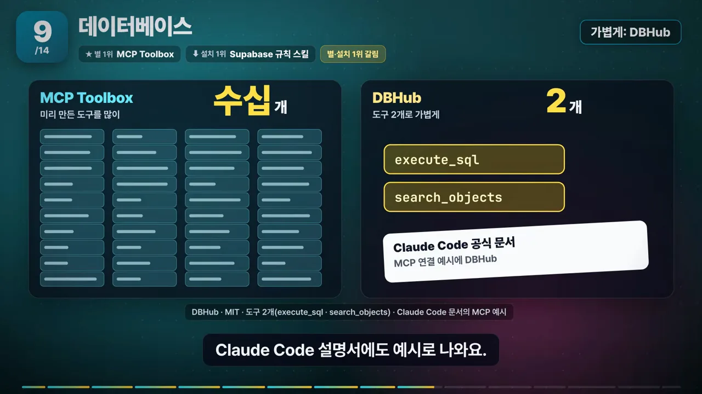
클라우드·보안·웹 검색
10. 클라우드: AWS MCP 서버 모음, Agent Toolkit, Azure 스킬
AWS(Amazon Web Services) MCP 서버 모음은 '이 프로젝트 배포하면 한 달에 얼마야?'를 실제 가격표로 계산하는 식으로 일해요. 서비스마다 따로 된 서버 60여 개를 내 컴퓨터에서 돌려요. 화면 가운데 노트북에 빼곡한 주황색 칸이 그 60여 개 서버예요.
아마존은 지난 5월 후속으로 Agent Toolkit을 내놨어요. 오른쪽 구름 '원격 서버 1개(아마존이 운영)'가 그것이에요. 아마존이 운영하는 원격 서버 하나에 권한 통제와 사용 기록을 더한 방식이에요. 옛 서버 모음도 계속 동작한다고 적혀 있지만, 둘을 같이 켜면 도구가 겹치니 하나만 쓰라고 권해요.

설치 1위인 Microsoft Azure 스킬은 방식이 달라요. 배포 전에 계획 파일부터 쓰고 승인을 받게 해요(계획 → 승인 → 배포). 별은 AWS 서버 모음이 9,800, 설치는 Azure 스킬이 56만으로 1위예요.
11. 보안: 언제 검사하느냐로 나누기
보안 도구는 검사하는 시점으로 나누면 쉬워요. 화면의 가로줄이 '설치 전 → 고칠 때 → 커밋할 때 → 부를 때' 순서예요.
- security-guidance(고칠 때·커밋할 때): Anthropic 플러그인이에요. 설치해 두면 코드를 고칠 때와 커밋할 때마다 자동으로 위험한 패턴을 짚어요.
/security-review(부를 때): Claude Code에 기본으로 있어요. 내가 부를 때 한 번, 지금 브랜치에서 바뀐 코드만 봐요.- SkillSpector(설치 전, 엔비디아): 검사 대상이 아예 달라요. 남이 만든 스킬을 설치하기 전에 검사해서 위험도를 매기고 '설치 금지'까지 판정해요.
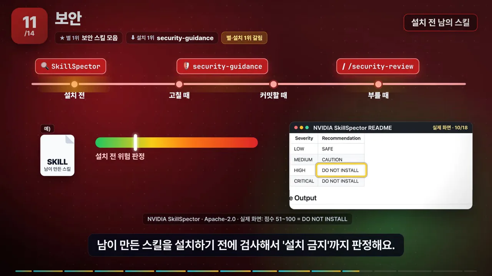
설치 전 검사가 필요한 이유로 영상은 연구 하나를 들어요. 왼쪽 격자 100칸 중 빨간 칸이 26개예요. 스킬 100개 중 26개꼴로 취약점이 나왔다는 결과예요.
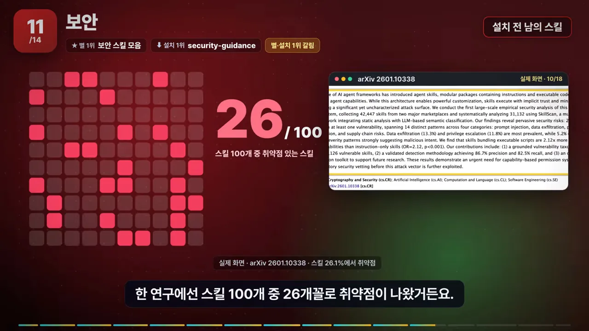
별이 가장 많은 건 보안 업무 절차 800여 개를 모은 스킬 모음이에요. 그런데 이름이 'ANTHROPIC CYBERSECURITY SKILLS'여도 Anthropic 공식이 아니에요. 아래 README 첫 줄의 노란 테두리 안에 '독립 커뮤니티 프로젝트이고 Anthropic과 관계없다'고 적혀 있어요.

12. 웹 검색: Firecrawl과 Crawl4AI
Firecrawl은 웹사이트 주소만 주면 광고와 메뉴를 걷어 내고, AI가 바로 읽을 수 있는 본문만 마크다운으로 돌려줘요. 기본은 Firecrawl 클라우드에 요청을 보내는 방식이고, 무료는 한 달 1,000 크레딧까지예요.
Crawl4AI는 반대로 내 컴퓨터에서 브라우저를 직접 돌리는 무료 파이썬 라이브러리가 기본이에요. 그림에서 URL(Uniform Resource Locator)이 위쪽 'Firecrawl 클라우드'(흐리게) 대신 아래쪽 '내 컴퓨터 · Crawl4AI' 브라우저로 가요. 오른쪽의 '서버로 직접 띄우면'과 '최신 버전으로' 아이콘이 주의할 점이에요.

브라우저·디자인, 그리고 별과 설치가 갈린 곳
13. 브라우저: browser-use, agent-browser, Playwright MCP, Chrome DevTools MCP
browser-use는 화면의 버튼과 입력칸에 번호를 붙여 놓고, AI가 '3번 클릭'처럼 하나씩 눌러서 작업을 끝내요. 항공권 예약 화면에서 출발·도착·날짜·인원 칸에 1~6번이 붙어 있고, 오른쪽에 '"3번 클릭"', '다음은 4번 → 6번'이 떠요. 다음에 뭘 누를지 판단도 browser-use의 에이전트가 해요.
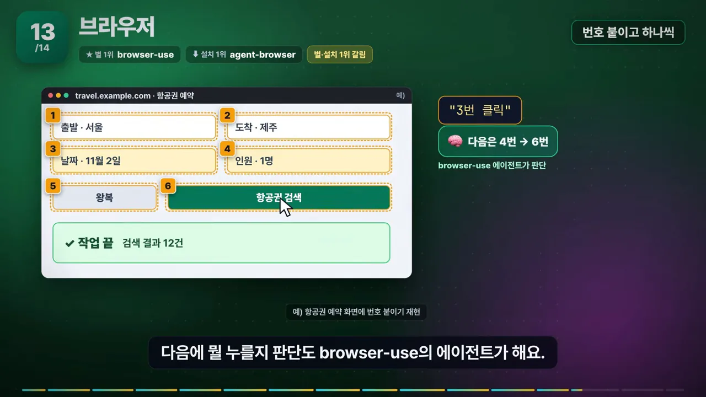
나머지 셋은 판단을 누가 하고 무엇에 강한지로 갈려요. 네 칸을 왼쪽부터 보면 돼요.
- browser-use: 스스로 판단하고 클릭해요.
- agent-browser: 설치 1위인 Vercel 도구예요. 판단은 Claude Code에 맡기고 클릭만 해 주는 명령줄 도구예요.
- Playwright MCP: 같은 방식으로 누르지만 테스트 쪽 기능이 강해요. 칸 안의 '로그인 화면 열림 · 버튼 클릭 동작 · 결과 문구 확인' 체크가 그 예예요.
- Chrome DevTools MCP: 조작보다 진단이 중심이에요. 느린 페이지, 네트워크 요청, 콘솔 오류를 에이전트가 직접 봐요.
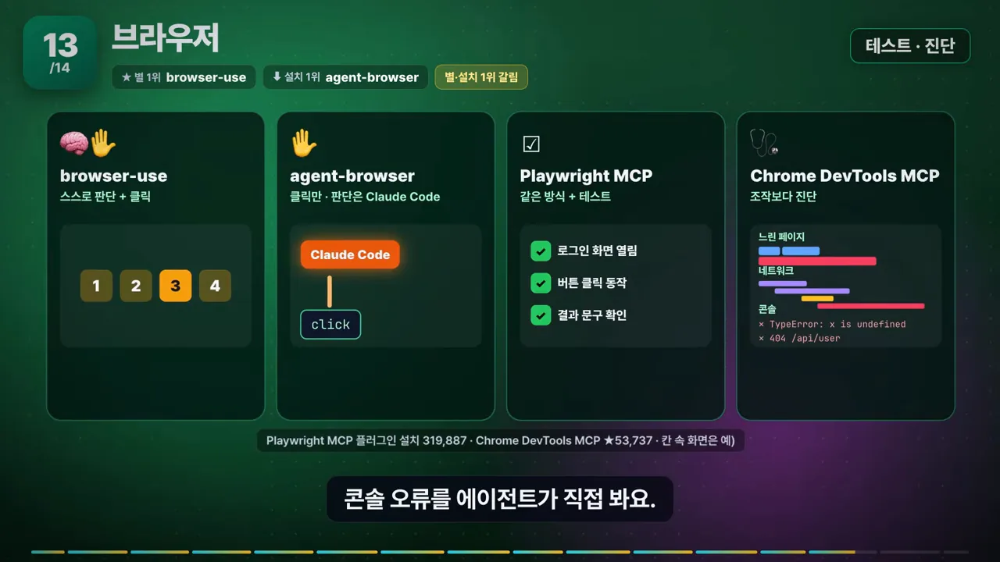
14. 디자인: frontend-design과 UI UX Pro Max
Anthropic의 frontend-design 스킬은 'AI가 만든 것 같은 느낌'을 주는 특징 다섯 가지를 색상 코드까지 적어 두고 피하게 해요. 오른쪽 '피할 것 5' 목록의 첫 번째가 '크림색 배경 + 주황 강조'이고, 아래에 그 색상 코드 #F4F1EA와 #D97757이 있어요. 왼쪽 예시 랜딩 페이지가 딱 그 조합이에요.
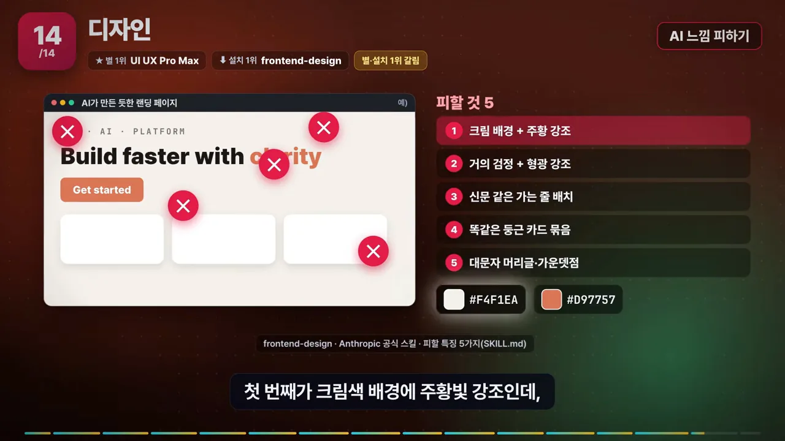
별 1위 UI(User Interface) UX(User Experience) Pro Max는 방향이 반대예요. 피할 것을 적는 대신, 원하는 느낌으로 검색해서 고르게 해요. 오른쪽 검색창에 'SaaS 대시보드, 차분하게'를 넣으면 색 조합 후보가 펼쳐지고, 아래에 '79 스타일 · 192 색 조합'이 보여요.
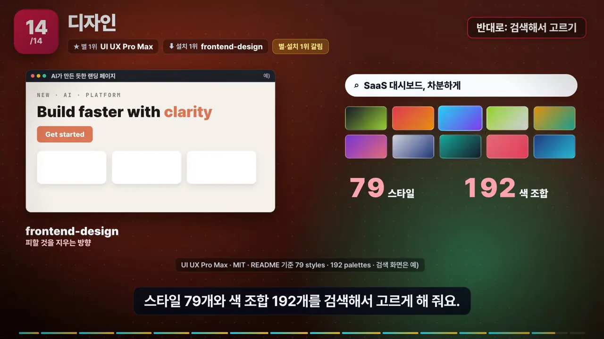
정리: 별 1위와 설치 1위가 갈린 여덟 곳
14개 분야를 다 보고 나면 결론은 하나예요. 14개 중 여덟 곳에서 별 1위와 설치 1위가 달랐어요. 화면에서 보라색으로 켜진 칸이 그 여덟 곳이에요. 스킬 찾기, 코드 리뷰, 개발 절차, 데이터베이스, 클라우드, 보안, 브라우저, 디자인이에요.
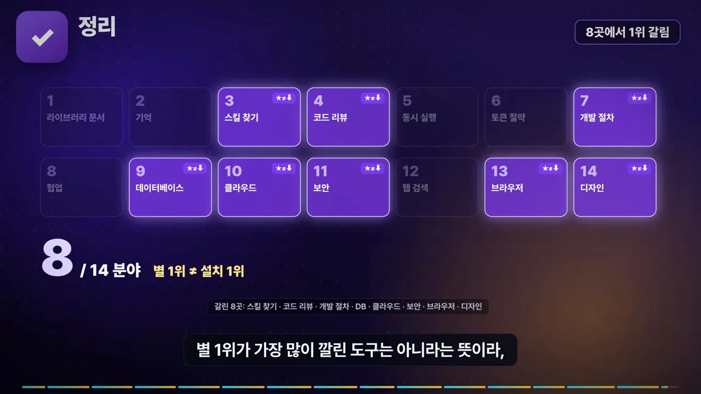
영상이 분야마다 말한 숫자를 한 표로 모았어요. 별은 GitHub 별, 설치는 skills.sh나 Claude 플러그인 마켓처럼 채널별 설치 수예요. 영상에서 설치 1위를 따로 말하지 않은 분야는 비워 뒀어요.
| 분야 | 별 1위 | 설치 1위 | 갈림 |
|---|---|---|---|
| 1 라이브러리 문서 | Context7 · 6만 3천 | Context7 · 42만 | 같음 |
| 2 기억 | claude-mem · 10만 1천 | — | — |
| 3 스킬 찾기 | 공식 플러그인 목록 · 4만 2천 | find-skills · 391만 | 갈림 |
| 4 코드 리뷰 | PR-Agent · 1만 3천 | Matt Pocock code-review · 75만 | 갈림 |
| 5 동시 실행 | Orca · 9만 6천 | — | — |
| 6 토큰 절약 | caveman · 11만 3천 | caveman · 58만 | 같음 |
| 7 개발 절차 | superpowers · 30만 1천 | grill-me(질문 스킬) · 138만 | 갈림 |
| 8 협업 | GitHub MCP 서버 · 3만 4천 | GitHub 공식 플러그인 · 32만 | 같음 |
| 9 데이터베이스 | MCP Toolbox · 1만 7천 | Supabase Postgres 규칙 · 45만 | 갈림 |
| 10 클라우드 | AWS MCP 서버 모음 · 9,800 | Azure 스킬 · 56만 | 갈림 |
| 11 보안 | 보안 스킬 모음(비공식) · 3만 4천 | security-guidance · 24만 | 갈림 |
| 12 웹 검색 | Firecrawl · 19만 3천 | — | — |
| 13 브라우저 | browser-use · 11만 8천 | agent-browser · 116만 | 갈림 |
| 14 디자인 | UI UX Pro Max · 13만 7천 | frontend-design · 113만 | 갈림 |
보안 스킬 모음의 별 수(34,620)는 말로는 나오지 않고 화면 주석에만 있어요. 채널은 다음 달에 같은 기준으로 다시 재서 1위가 바뀐 분야를 올리겠다고 해요.